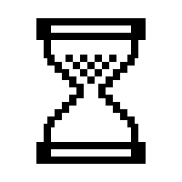

User 1
User 2
Mutual followers
Mutual follows
Known followers
Shows the "followed by" users you would see if you were logged in as
Viewer
, looking at
Target
's profile
Submit
Stop

Users who
follows, and who follow
Users that follow both
and
Users followed by both
and